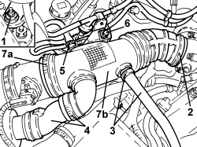

1048A63 HOSE CONNECTING RESONATOR, FLOW METER AND THROTTLE BODY - R.R.
- Path
- Procedures > 10 ENGINE > 1048 ENGINE AIR SUPPLY CIRCUIT > 1048A VACUUM AIR CIRCUIT > 1048A63 HOSE CONNECTING RESONATOR, FLOW METER AND THROTTLE BODY - R.R.
- Kind
- repair procedure (removal / refitting; the operation number is the code)
- Applies to
- engines: 3.2 JTS; all production periods
- Interactive page
- https://sloeber94.github.io/elrnDB-aBrrSpdr/en/#/946001903
Applies to: engines: 3.2 JTS; all production periods
 Removing
Removing
 Refitting
Refitting1. Undo the nut securing the air hose bracket to the bodyshell.
2. Loosen the band securing the air hose to the throttle body.
3. Loosen the band and disconnect the oil vapour pipes from the air hose.
4. Loosen the band and disconnect the hose from the resonator.
5. Disconnect the vacuum pipe.
6. Undo the bolt fixing the vacuum pipe support complete with one-way valves.
7. Loosen the band (7) and remove the air hose (7b) from the flow meter.

Applies to: engines: 3.2 JTS; all production periods
Refitting
Removing- Connect the air hose to the flow meter and secure it using the band.
- Connect the hose to the resonator and secure it using the band.
- Connect the oil vapour pipe to the air hose and secure with the band.
- Tighten the band securing the air hose to the throttle body.
- Tighten the nut securing the bracket integrated with the air hose.
- Tighten the bolt fixing the vacuum pipe support complete with one-way valves.
- Connect the vacuum pipe to the air hose and secure it using the band.
Topics that link to this page (6)
- 1004B14 POWER UNIT WITH AUTOMATIC TRANSMISSION R + R
- 1056F09 HOT FILM AIR FLOW METER - R.R
- 1056F17 THROTTLE BODY WITH DVL - R.R.
- 1056F56 RIGHT CYLINDER HEAD INTAKE OR EXHAUST CAM ANGLE SENSOR - R.R.
- 1088D27 RIGID COOLANT INTAKE PIPE TO WATER PUMP - R R FOR VERSIONS WITH AIR CONDITIONING AND AUTOMATIC TRANSMISSION
- 1088D33 WATER PUMP FEED INTERMEDIATE PIPING - R R